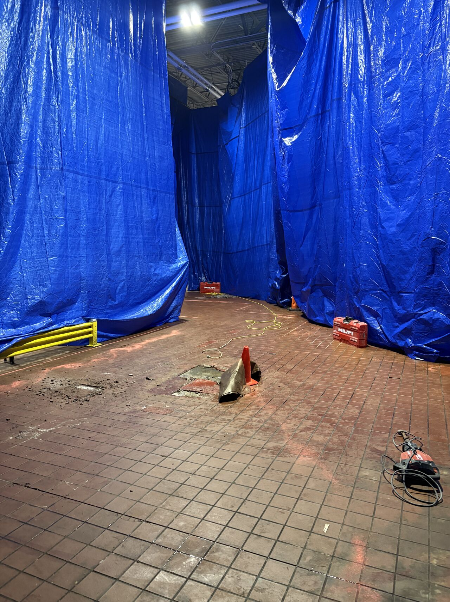
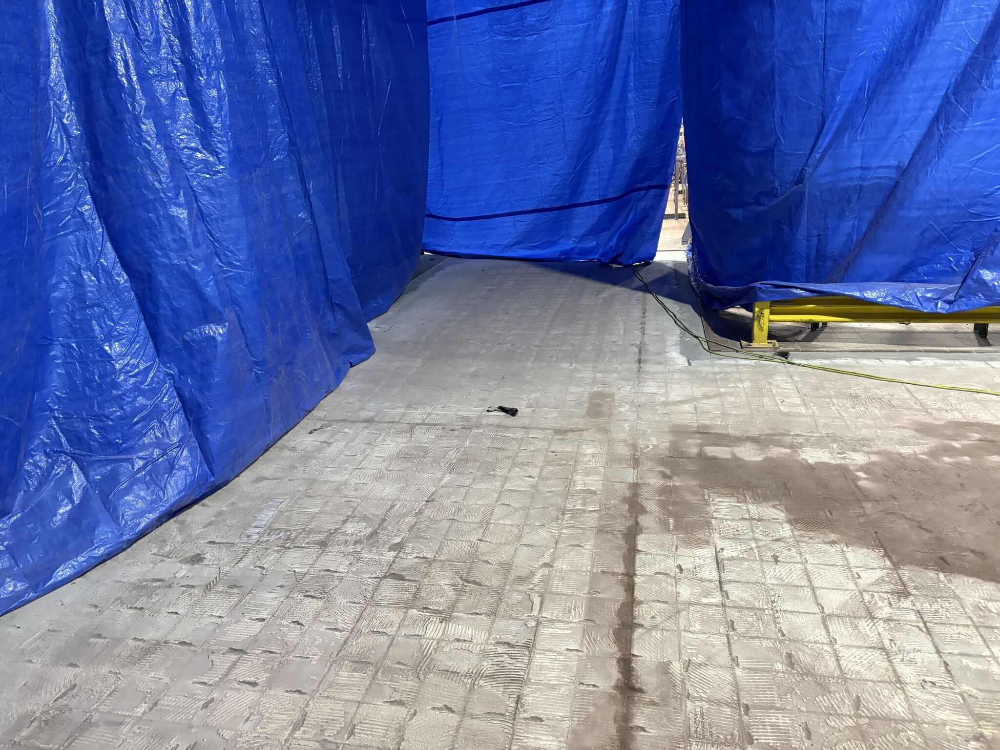
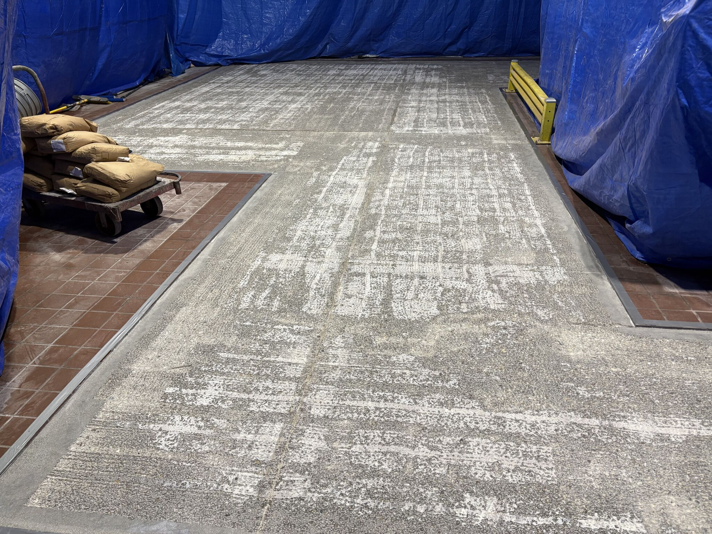
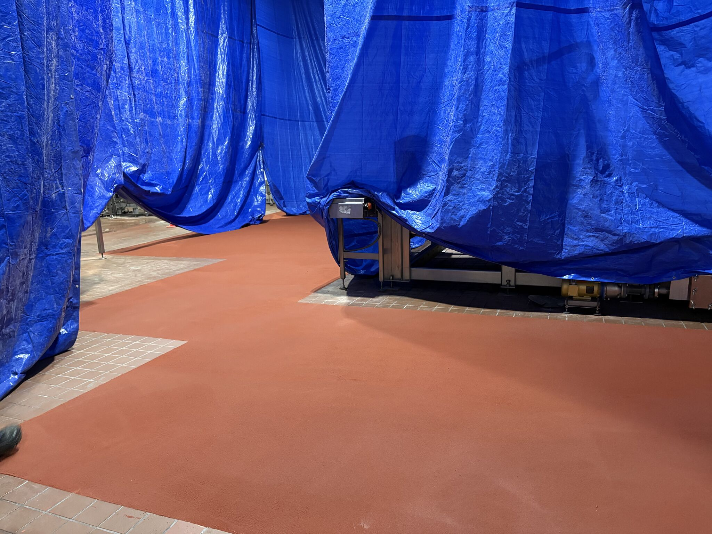
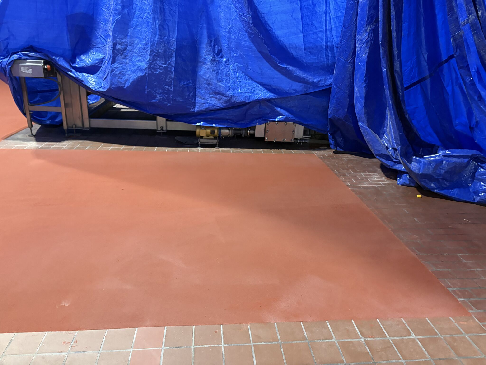
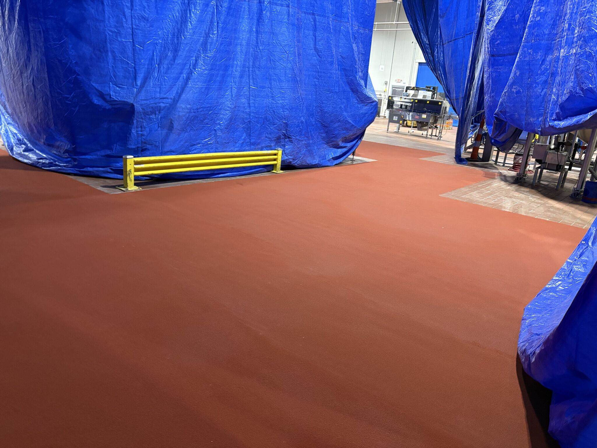

Their forklifts got a new route. The tile floor did not get the memo.
That is a small sentence, but it is a common food plant problem. Traffic patterns change. Storage gets moved. Production finds a faster way through a room. The floor that used to live under lighter use suddenly has forklifts turning across it every day, and tile that was already the wrong fit starts letting go.
Loose tile in a food plant is not something to sit on. Once the floor opens up, the issue is bigger than a chipped edge. Open joints, broken pieces, and wet traffic create places that are harder to clean and easier to keep fighting.
When Traffic Changes, the Floor Has to Keep Up
This job started with tile that was not rated for the way the room was now being used. The post did not need a long explanation because the photos told the story: containment was up, the failed tile was exposed, and the traffic path needed to be rebuilt with something that belonged in that service.
SaniCrete came in for a focused repair, not a drawn-out shutdown. The crew jackhammered the failed tile, scarified the substrate, installed 3/8 inch SaniCrete STX, cleaned up, and got out of the plant's way.


A Repair Is Only Fast if the Prep Is Right
Twelve hours is quick, but it does not mean skipping the part that matters. A resinous floor repair depends on the substrate under it. If the bad tile is gone but the surface below it is not prepared, the plant is only buying time until the next failure shows up.
Scarifying gives the STX system the profile it needs. Clean edges help the new floor meet the surrounding tile neatly. The goal is not just to cover the failed area. The goal is to leave the traffic path ready for the forklifts that caused the problem in the first place.


From Problem to Floor in One Day
They started the day with a problem and ended it with a floor. That is the part that matters to the plant. Production schedules do not care that the tile was never meant for the new forklift route. They need the room back, the traffic path sound, and the floor ready to clean.
That is where STX fits. It is built for hard food plant service, forklift traffic, washdown, thermal shock, and the kind of work that chews up lighter floors. On a repair like this, it lets the plant fix the weak spot without turning one failed section into a long production headache.


If a forklift route changed and the floor is showing it, do not wait until loose tile turns into a bigger shutdown. Fix the failed section with the right system and get the room back to work.